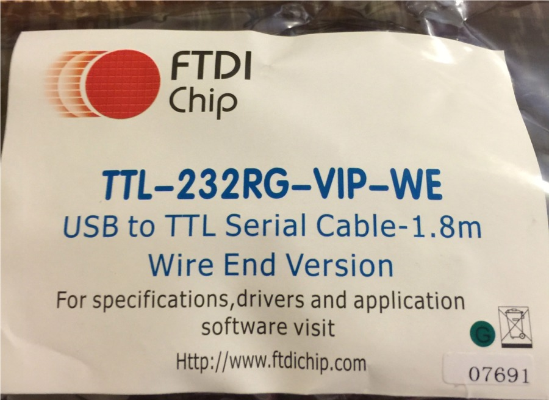

- This page will teach you how to make a cable that can be connected to the to the "DB15 Hand Controller Port" of the Gemini-1. This cable will provide a USB to Serial virtual port into your computer by replacing the Deluxe Hand Controller connected to the DB15 connector.
- There are drivers for many different operating systems available. See http://www.ftdichip.com/Drivers/VCP.htm for the different drivers, including MAC OSX, Windows, Windows 8.1 and Linux.
- This cable can be used if your main RS-232 port has gone on the fritz, or just as a second port. You can have this port connected to ASCOM, and the main RS-232 port connected to GCC for example. The reverse is also true. The one word of caution if using both ports at the same time, is do not send conflicting commands to the Gemini from the applications connected to the Gemini. Unpredictable results can happen, and you could damage your mount.
- For this cable to be safe in connecting into the Gemini Deluxe hand controller port, you should use an USB Isolator.
- GPS receivers will not work through this communications port, as the Gemini does not interrogate this port for GPS.
- Also you will have to use a program that can tell the Gemini how to boot. See item 6 under using the cable below.
- Here are the items you will need to build this cable:
- A USB to TTL 5V Serial FTDIchip cable. Part number TTL-232RG-VIP-WE available from Digikey or Mouser.
- A DB15 Male Connector with Solder cup connections. From Digikey from Mouser
- A plastic D-Sub Backshell for covering the connector. From Digikey from Mouser
- Some heat shrink to fit over the solder cup connections.
- A short peace of wire.
- A good Soldering Iron, wire cutters and wire strippers, and some way to heat the heat shrink.
- An USB ISOLATED Adapter. Optional but highly recommended.

The package as it arrived from Mouser or Digikey, nicely sealed in anti-static packaging.

Cable removed from package, the cable will have an transparent plastic end.